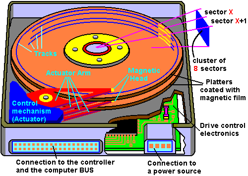
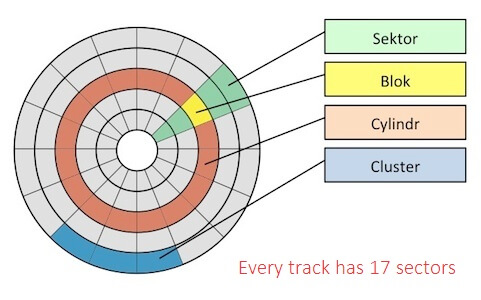

Table of Contents
1. Parallel HDD magnetic reader
1.1. Problem statement

Figure 1: Traditional HDD

Figure 2: HDD logical bird's eye view
The R/W head is problematic in traditional HDDs for three reasons:
- First component to break on the disk (i.e. weakest link in chain)
- Seek time is expensive to align head with proper track
- Bandwith is limited to 1 block per sector rotation.
We need a faster, more mechanically robust way to store and read data.
1.2. Solution
Rather than having a magnetic reader at a per-track granularity, remove the mechanical movement of the head so it is fixed. We line the arm of the head with a magnetic reader that spans all \(|T|\) tracks of the platter. Then we can have a bandwidth of \(|T|*|B|\) per sector rotation where \(|B|=\) block size.
We store files in a vertical manner, e.g. file size \(|F|\) blocks starts in sector \(s\) and spans tracks \([i,i+|F|\%|T|)\) for sectors \([s,s+|F|/|T|)\).
1.3. Blueprint
1.3.1. Magnetic reader arm
e.g. if we have 4 tracks in our platter, we can have an arm with \(m=2\) rows for R/W so that when we read one sector the data goes into the \(curr\_row\) row then when we reach the next sector we read into row \(curr\_row=(curr\_row+1)\%m\). While this is reading, we flush the data of the previous row to memory.
We can choose \(m\) based on our throughput capabilities of the memory bus so that it rate matches the magnetic arm's speed.
In the example below if we are reading file alphabet.txt from disk, for our first sector we read \([a,b,c,d]\) into row 0, then when we reach the next sector we simultaneously:
- flush \([a,b,c,d]\) over the memory bus and
- read \([e,f,g]\) into row 1.
Then when the platter rotates to the next sector, we flush \([e,f,g]\) to the memory bus.
Magnetic reader arm diagram: row = modulo; columns = slot indices
| 1 | 2 | 3 | 4 | |
|---|---|---|---|---|
| 0 | a | b | c | d |
| 1 | e | f | g |
1.3.2. Cost breakdown
TBD (I need to call seagate or western digital to inquire about component costs because I'm struggling to find this data online).
We are assuming eliminating the cost of a moving arm and adding on the cost of a magnetic head which spans all tracks of a platter is small enough to be worth the substantial throughput gains and mechanical robustness of less moving pieces in our HDD.
1.4. Throughput gains
e.g. 10KRPM, 4KB block size, 10,000 tracks, 100 geometric sectors
- Traditional HDD:
- \(tput=\frac{10,000revolution}{1m}*\frac{m}{60,000ms}* \ \frac{100sectors}{revolution}*\frac{1block}{sector}* \ \frac{4KB}{block}=67KB/ms\)
- Parallel HDD:
- Same calculation except multiply by # tracks (10,000): \[tput=670MB/ms\]
- Furthermore, we can eliminate seek time of the arm since its position is static and spans all the tracks of our disk.